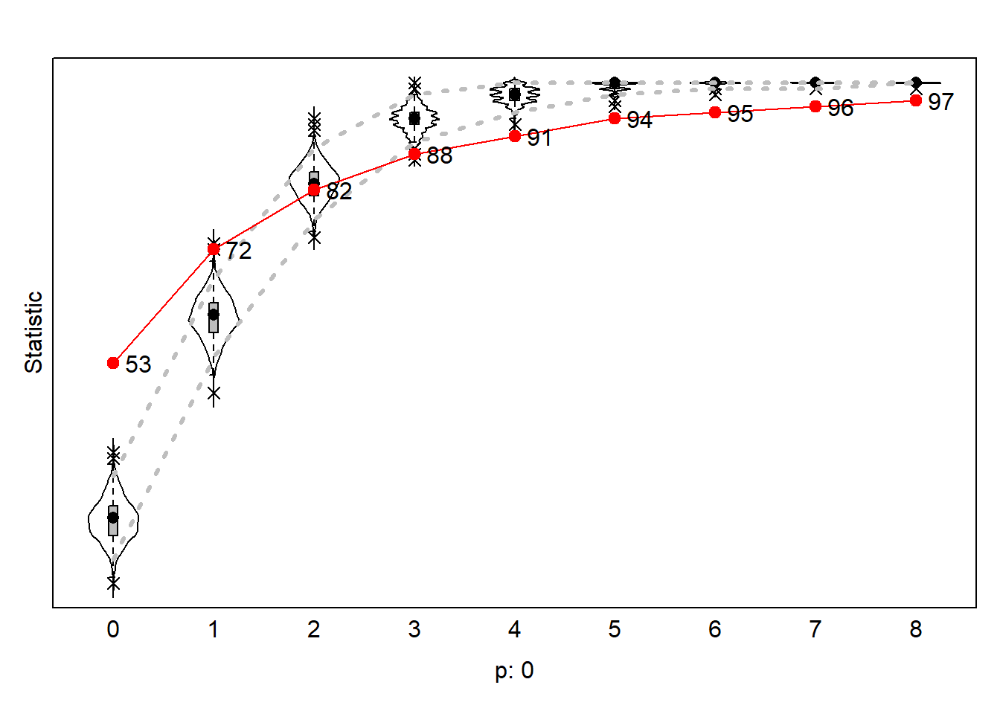
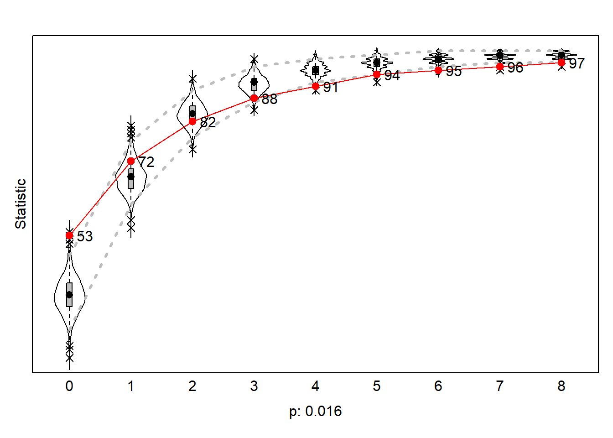
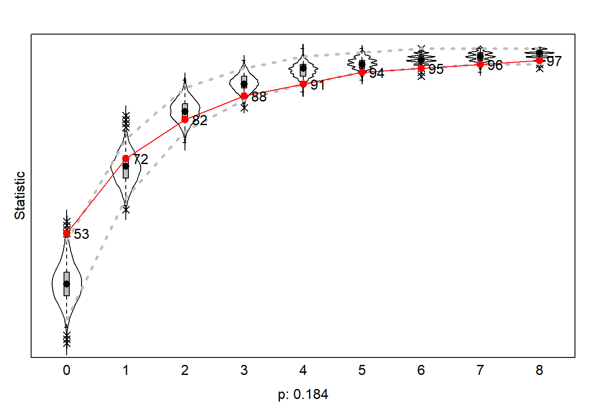
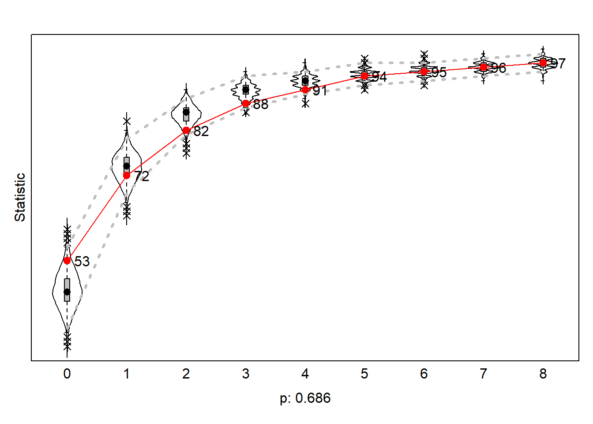
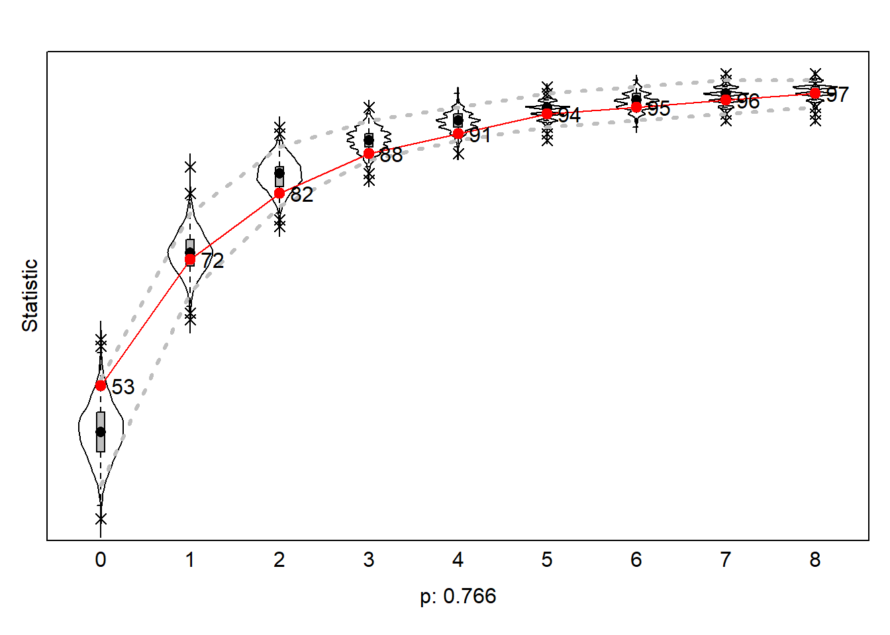

Load UDF
colorize <- function(x, color) {
sprintf("<span style='color: %s;'>%s</span>", color, x)
}
fpackage.check <- function(packages) {
lapply(packages, FUN = function(x) {
if (!require(x, character.only = TRUE)) {
install.packages(x, dependencies = TRUE)
library(x, character.only = TRUE)
}
})
}
fsave <- function(x, file = NULL, location = "./results/processed/") {
ifelse(!dir.exists("results"), dir.create("data"), FALSE)
ifelse(!dir.exists("results/processed"), dir.create("results/processed"), FALSE)
if (is.null(file))
file = deparse(substitute(x))
datename <- substr(gsub("[:-]", "", Sys.time()), 1, 8)
totalname <- paste(location, datename, file, ".rda", sep = "")
save(x, file = totalname) #need to fix if file is reloaded as input name, not as x.
}
fload <- function(filename) {
load(filename)
get(ls()[ls() != "filename"])
}
fshowdf <- function(x, ...) {
knitr::kable(x, digits = 2, "html", ...) %>%
kableExtra::kable_styling(bootstrap_options = c("striped", "hover")) %>%
kableExtra::scroll_box(width = "100%", height = "300px")
}
Make network data for
RSiena
print(paste0("", dim(soc_data$nets)))
#> [1] "2" "100" "100"
wave_1 <- soc_data$nets[1, , ]
diag(wave_1) <- 0
wave_2 <- soc_data$nets[2, , ]
diag(wave_2) <- 0
net_soc_array <- array(data = c(wave_1, wave_2), dim = c(dim(wave_1), 2))
dim(net_soc_array)
#> [1] 100 100 2
Analysis
Model 0
The Null model, containing reciprocity and density, has a convergence
of 0.057 and a Goodness of Fit on the indegree distribution of 0,
indicating that the model fits the data very badly. This makes sense,
given that the model does not include any network statistics. Both
reciprocity and density are significant for an alpha of 0.05. It is
important to mention that significance in RSiena means something
different than in conventional statistics. In normal statistics, such as
OLS-regression, significance of estimates refers to the fact that they
are not 0, In RSiena, however, it refers to the fact that the estimates
were precisely determined (Ripley et al.
2011). Going forward with this chapter, significance will refer
to this definition of significance. The density parameter has a value of
-2.44, which means that people generally do not want to have a dense
network. The reciprocity parameter has a value of 2.24, which means that
people like to send ties back to people who have sent a tie to them.
Create
SienaData
#---- Dependent ----
net <- sienaDependent(net_soc_array)
#---- Make Siena df ----
mydata_M0 <- sienaDataCreate(net)
Create Effects
object
myeff_M0 <- getEffects(mydata_M0)
print01Report(mydata_M0, modelname = "./results/Collab_M0")
# ts_dyads_evo(sims = wave_2, net1 = wave_1, forplot = TRUE) ts_triads_evo(sims = wave_2, net1 =
# wave_1, forplot = TRUE)
Add Effects
Create and Run the
Algorithm
myAlgorithm_M0 <- sienaAlgorithmCreate(projname = "./results/Collab_M0")
ans_M0 <- siena07(myAlgorithm_M0, data = mydata_M0, effects = myeff_M0, returnDeps = TRUE)
ans_M0
# fsave(ans_M0, file = '-ans_M0')
# if necessary estimate again! ans_M1_2 <- siena07(myAlgorithm, data = mydata, effects = myeff,
# prevans_ = ans_M1, returnDeps=TRUE) ans_M1_2
#> Estimates, standard errors and convergence t-ratios
#>
#> Estimate Standard Convergence
#> Error t-ratio
#>
#> Rate parameters:
#> 0 Rate parameter 3.7909 ( 0.5568 )
#>
#> Other parameters:
#> 1. eval outdegree (density) -2.4432 ( 0.0973 ) 0.0524
#> 2. eval reciprocity 2.2383 ( 0.2719 ) 0.0433
#>
#> Overall maximum convergence ratio: 0.0573
#>
#>
#> Total of 1800 iteration steps.
Goodness of
Fit
GOF <- sienaGOF(ans_M0, IndegreeDistribution, verbose = FALSE, join = TRUE, varName = "net")
plot(GOF, main = "")

Model 1
This model includes the relevant network statistics: InPop, outAct,
isolateNet. It has a convergence of 0.17 and a Goodness of Fit on the
indegree distribution of 0.016. Indegree Popularity (inPop) is defined
as the extent to which people who have a lot of indegrees are more
popular to connect with. This parameter is 0.18, meaning that actors
have a preference to connect with actors who have a lot of indegrees.
The parameter is significant for an alpha of 0.05. Outdegree Activity
(outAct) has a value of -0.13, but is not significant. IsolateNet is
significant andhas a value of 3.91 and refers to the preference of
remaining an isolate. As this value is positive, it means that people
prefer to be an isolate in the network.
Create
SienaData
#---- Dependent ----
net <- sienaDependent(net_soc_array)
#---- Make Siena df ----
mydata_M1 <- sienaDataCreate(net)
Create Effects
object
myeff_M1 <- getEffects(mydata_M1)
print01Report(mydata_M1, modelname = "./results/Collab_M1")
# ts_dyads_evo(sims = wave_2, net1 = wave_1, forplot = TRUE) ts_triads_evo(sims = wave_2, net1 =
# wave_1, forplot = TRUE)
Add Effects
myeff_M1 <- includeEffects(myeff_M1, isolateNet, inPop, outAct)
#> effectName include fix test initialValue parm
#> 1 indegree - popularity TRUE FALSE FALSE 0 0
#> 2 outdegree - activity TRUE FALSE FALSE 0 0
#> 3 network-isolate TRUE FALSE FALSE 0 0
Create and Run the
Algorithm
myAlgorithm_M1 <- sienaAlgorithmCreate(projname = "./results/Collab_M1")
ans_M1 <- siena07(myAlgorithm_M1, data = mydata_M1, effects = myeff_M1, returnDeps = TRUE)
ans_M1
# fsave(ans_M1, file = '-ans_M1')
# if necessary estimate again! ans_M1_2 <- siena07(myAlgorithm_M1, data = mydata_M1, effects =
# myeff_M1, prevAns = ans_M1, returnDeps=TRUE) ans_M1_2
# fsave(ans_M1_2, file = '-ans_M1_2')
#> Estimates, standard errors and convergence t-ratios
#>
#> Estimate Standard Convergence
#> Error t-ratio
#>
#> Rate parameters:
#> 0 Rate parameter 4.9146 ( 0.7690 )
#>
#> Other parameters:
#> 1. eval outdegree (density) -2.0204 ( 0.6039 ) 0.1504
#> 2. eval reciprocity 1.9155 ( 0.2709 ) 0.0451
#> 3. eval indegree - popularity 0.1847 ( 0.0380 ) 0.0426
#> 4. eval outdegree - activity -0.1320 ( 0.1118 ) 0.1220
#> 5. eval network-isolate 3.9125 ( 1.3059 ) -0.0821
#>
#> Overall maximum convergence ratio: 0.1650
#>
#>
#> Total of 2275 iteration steps.
Goodness of
Fit
GOF <- sienaGOF(ans_M1, IndegreeDistribution, verbose = FALSE, join = TRUE, varName = "net")
plot(GOF, main = "")

Model 2 - Add Gender
(dropped)
Model 2 builds on Model 1 and includes the network statistics for
gender: diffX, diffXTransTrip, egoX & altX. This model has a
convergence of 0.23 and a Goodness of Fit on the indegree distribution
of 0.184. For the structural network statistics we find similar results,
in terms of estimate size and significance, as in Model 1. However, the
outdegree activity parameter almost reaches significance (-1.7135484).
With regard to the covariate network statistics, we find that the gender
of ego (egoX), the gender of alter (altX) and the difference between ego
and alter (diffX) is not significant and thus the estimate cannot be
trusted. The transtrip for different gender (diffXTransTrip) is positive
and significant, which implies that an ego prefers to close triads with
alters who have a different gender score than theirs. This is an
interesting finding, because it implies that their is a tendency towards
diverse collaboration. However, when compared to the level of gender
clustering and the fact that this clustering decreased, this finding
does make sense.
Create
SienaData
#---- Dependent ----
net <- sienaDependent(net_soc_array)
#---- Independent ----
gender <- df_ego$perc_female
gender <- coCovar(gender)
#---- Make Siena df ----
mydata_M2 <- sienaDataCreate(net, gender)
Create Effects
object
myeff_M2 <- getEffects(mydata_M2)
print01Report(mydata_M2, modelname = "./results/Collab_M2")
Add Effects
myeff_M2 <- includeEffects(myeff_M2, isolateNet, inPop, outAct)
#> effectName include fix test initialValue parm
#> 1 indegree - popularity TRUE FALSE FALSE 0 0
#> 2 outdegree - activity TRUE FALSE FALSE 0 0
#> 3 network-isolate TRUE FALSE FALSE 0 0
myeff_M2 <- includeEffects(myeff_M2, diffX, diffXTransTrip, egoX, altX, interaction1 = "gender")
#> effectName include fix test initialValue parm
#> 1 gender alter TRUE FALSE FALSE 0 0
#> 2 gender ego TRUE FALSE FALSE 0 0
#> 3 gender difference TRUE FALSE FALSE 0 0
#> 4 transitive triplets diff. gender TRUE FALSE FALSE 0 0
Create and Run the
Algorithm
myAlgorithm_M2 <- sienaAlgorithmCreate(projname = "./results/Collab_M2")
ans_M2 <- siena07(myAlgorithm_M2, data = mydata_M2, effects = myeff_M2, returnDeps = TRUE)
ans_M2
# fsave(ans_M2, file = '-ans_M2')
# if necessary estimate again!
ans_M2_2 <- siena07(myAlgorithm, data = mydata_M2, effects = myeff_M2, prevAns = ans_M2, returnDeps = TRUE)
ans_M2_2
# fsave(ans_M2_2, file = '-ans_M2_2')
#> Estimates, standard errors and convergence t-ratios
#>
#> Estimate Standard Convergence
#> Error t-ratio
#>
#> Rate parameters:
#> 0 Rate parameter 4.6291 ( 0.6630 )
#>
#> Other parameters:
#> 1. eval outdegree (density) -1.6770 ( 0.7257 ) 0.0321
#> 2. eval reciprocity 2.0153 ( 0.3034 ) -0.0277
#> 3. eval indegree - popularity 0.1832 ( 0.0417 ) 0.0255
#> 4. eval outdegree - activity -0.2656 ( 0.1550 ) -0.0131
#> 5. eval network-isolate 3.7684 ( 1.2157 ) -0.0927
#> 6. eval gender alter 0.8203 ( 21.2389 ) -0.0332
#> 7. eval gender ego -0.0624 ( 21.2480 ) 0.0006
#> 8. eval gender difference -0.7987 ( 21.2507 ) -0.0176
#> 9. eval transitive triplets diff. gender 1.4267 ( 0.4234 ) -0.0226
#>
#> Overall maximum convergence ratio: 0.2259
#>
#>
#> Total of 2627 iteration steps.
Goodness of
Fit
GOF <- sienaGOF(ans_M2, IndegreeDistribution, verbose = FALSE, join = TRUE, varName = "net")
plot(GOF, main = "")

Model 2.5 - Add
Gender
Model 2.5 is practically the same model as Model 2, but with
inPopSqrt (indegree popularity squared) instead of inPop. These models
were estimated to check which had the better Goodness of Fit, which
according to the RSiena Manual should be inPopSqrt (Ripley et al. 2011). This model has a
convergence ratio of 0.21 and a Goodness of Fit on the indegree
distribution of 0.89, implying a much better fit with the data. Overall,
the estimates of this model were similar to Model 2. There is some
variability in the sizes of the estimates and standard errors, but this
is due to the simulation process, which does not produce identical
estimates. Yet, the general direction of the effect and the significance
is not different between these models and are thus have consistent
findings.
Create
SienaData
#---- Dependent ----
net <- sienaDependent(net_soc_array)
#---- Independent ----
gender <- df_ego$perc_female
gender <- coCovar(gender)
#---- Make Siena df ----
mydata_M2.5 <- sienaDataCreate(net, gender)
Create Effects
object
myeff_M2.5 <- getEffects(mydata_M2.5)
print01Report(mydata_M2.5, modelname = "./results/Collab_M2.5")
Add Effects
myeff_M2.5 <- includeEffects(myeff_M2.5, isolateNet, inPopSqrt, outAct)
#> effectName include fix test initialValue parm
#> 1 indegree - popularity (sqrt) TRUE FALSE FALSE 0 0
#> 2 outdegree - activity TRUE FALSE FALSE 0 0
#> 3 network-isolate TRUE FALSE FALSE 0 0
myeff_M2.5 <- includeEffects(myeff_M2.5, diffX, diffXTransTrip, egoX, altX, interaction1 = "gender")
#> effectName include fix test initialValue parm
#> 1 gender alter TRUE FALSE FALSE 0 0
#> 2 gender ego TRUE FALSE FALSE 0 0
#> 3 gender difference TRUE FALSE FALSE 0 0
#> 4 transitive triplets diff. gender TRUE FALSE FALSE 0 0
Create and Run the
Algorithm
myAlgorithm_M2.5 <- sienaAlgorithmCreate(projname = "./results/Collab_M2.5")
ans_M2.5 <- siena07(myAlgorithm_M2.5, data = mydata_M2.5, effects = myeff_M2.5, returnDeps = TRUE)
ans_M2.5
fsave(ans_M2.5, file = "-ans_M2.5")
# if necessary estimate again! ans_M2.5_2 <- siena07(myAlgorithm, data = mydata, effects =
# myeff_M2.5, prevAns = ans_M2.5, returnDeps=TRUE) ans_M2.5_2 fsave(ans_M2.5_2, file =
# '-ans_M2.5_2')
#> Estimates, standard errors and convergence t-ratios
#>
#> Estimate Standard Convergence
#> Error t-ratio
#>
#> Rate parameters:
#> 0 Rate parameter 4.6839 ( 0.7500 )
#>
#> Other parameters:
#> 1. eval outdegree (density) -2.9587 ( 0.6997 ) -0.0212
#> 2. eval reciprocity 2.0810 ( 0.3019 ) -0.0231
#> 3. eval indegree - popularity (sqrt) 0.9106 ( 0.1242 ) -0.0198
#> 4. eval outdegree - activity -0.2019 ( 0.1291 ) -0.0614
#> 5. eval network-isolate 2.8937 ( 1.2358 ) -0.0156
#> 6. eval gender alter 0.3514 ( 20.0817 ) -0.0150
#> 7. eval gender ego 0.3397 ( 20.0594 ) -0.0279
#> 8. eval gender difference -0.2874 ( 20.0914 ) 0.0114
#> 9. eval transitive triplets diff. gender 1.1681 ( 0.3948 ) -0.0409
#>
#> Overall maximum convergence ratio: 0.2064
#>
#>
#> Total of 2551 iteration steps.
Goodness of
Fit
GOF <- sienaGOF(ans_M2.5, IndegreeDistribution, verbose = FALSE, join = TRUE, varName = "net")
plot(GOF, main = "")
Model 3 - Add
Prestige
Model 3 includes the covariate network statistics for Prestige: egoX,
altX and inPopX. This model has a convergence ratio of 0.23 and a a
Goodness of Fit on the indegree distribution of 0.64. In this model, the
parameters for density and reciprocity are still significant, with
values of -1.98 (se = 0.71) and 2.59 (se = 0.38) respectively, meaning
that actors prefer sparse networks, but do prefer to send ties to alters
who have sent ties to them. IsolateNet is still significant with a value
of 3.23 (se = 1.06), implying that actors prefer to be isolates. In this
model, indegree popularity squared (b = 0.17, se = 0.21) is no longer
significant, implying that this might be explained by other network
statistics in the model. The covariate statistics for gender show
similar findings as Model 2 & Model 2.5, namely that actors prefer
to close triads with alters that have a different score for gender (b =
1.51, se = 0.44). the ego effect and alter effect for gender are
non-significant, as was the case in Model 2 & Model 2.5.
Lastly, Model 3 shows some significant results with regards to the
covariate network statistics for prestige. The prestige effect for
alters is positive, implying that people prefer to send ties to people
who have a higher amount of prestige (b = 0.042, se = 0.0089).
Additionally, the prestige effect for egos is negative, which indicates
that people who have higher prestige send less ties (b = -0.030, se =
0.015). This is in line with theories of preferential attachment and
upward mobility, because as egos with higher prestige will are more
likely to receive request for collaboration rather then sending request
for collaboration. Interestingly enough, the indegree popularity
statistic for prestige is not significant (b = -0.012, se = 0.023),
implying that actors who are more prestigious do not receive more
indegrees.
Create
SienaData
#---- Dependent ----
net <- sienaDependent(net_soc_array)
#---- Independent ----
gender <- df_ego$perc_female
gender <- coCovar(gender)
prestige <- df_ego %>%
select(Q1.W1, Q1.W2) %>%
mutate(mean_pres = (Q1.W1 + Q1.W2)/2)
prestige <- prestige$mean_pres
prestige <- coCovar(prestige)
# h_index <- df_ego$h_index h_index <- coCovar(h_index)
#---- Make Siena df ----
mydata_M3 <- sienaDataCreate(net, gender, prestige) #, h_index)
Create Effects
object
myeff_M3 <- getEffects(mydata_M3)
print01Report(mydata_M3, modelname = "./results/Collab_M3")
# ts_dyads_evo(sims = wave_2, net1 = wave_1, forplot = TRUE) ts_triads_evo(sims = wave_2, net1 =
# wave_1, forplot = TRUE)
Add Effects
myeff_M3 <- includeEffects(myeff_M3, isolateNet, inPopSqrt, outAct)
#> effectName include fix test initialValue parm
#> 1 indegree - popularity (sqrt) TRUE FALSE FALSE 0 0
#> 2 outdegree - activity TRUE FALSE FALSE 0 0
#> 3 network-isolate TRUE FALSE FALSE 0 0
myeff_M3 <- includeEffects(myeff_M3, diffX, diffXTransTrip, egoX, altX, interaction1 = "gender")
#> effectName include fix test initialValue parm
#> 1 gender alter TRUE FALSE FALSE 0 0
#> 2 gender ego TRUE FALSE FALSE 0 0
#> 3 gender difference TRUE FALSE FALSE 0 0
#> 4 transitive triplets diff. gender TRUE FALSE FALSE 0 0
myeff_M3 <- includeEffects(myeff_M3, egoX, altX, inPopX, interaction1 = "prestige")
#> effectName include fix test initialValue parm
#> 1 prestige alter TRUE FALSE FALSE 0 0
#> 2 prestige ego TRUE FALSE FALSE 0 0
#> 3 ind. pop.^(1/#) weighted prestige TRUE FALSE FALSE 0 1
# myeff_M3 <- includeEffects(myeff_M3, altX, inpopX, interaction1 = 'h_index')
Create and Run the
Algorithm
myAlgorithm_M3 <- sienaAlgorithmCreate(projname = "./results/Collab_M3")
ans_M3 <- siena07(myAlgorithm_M3, data = mydata_M3, effects = myeff_M3, returnDeps = TRUE)
ans_M3
fsave(ans_M3, file = "-ans_M3")
# if necessary estimate again!
ans_M3_2 <- siena07(myAlgorithm_M3, data = mydata_M3, effects = myeff_M3, prevAns = ans_M3, returnDeps = TRUE)
ans_M3_2
# fsave(ans_M3_2, file = '-ans_M3')
#> Estimates, standard errors and convergence t-ratios
#>
#> Estimate Standard Convergence
#> Error t-ratio
#>
#> Rate parameters:
#> 0 Rate parameter 4.4849 ( 0.6263 )
#>
#> Other parameters:
#> 1. eval outdegree (density) -1.9851 ( 0.7113 ) -0.0031
#> 2. eval reciprocity 2.5925 ( 0.3753 ) -0.0097
#> 3. eval indegree - popularity (sqrt) 0.1703 ( 0.2132 ) -0.0411
#> 4. eval outdegree - activity -0.2280 ( 0.1295 ) -0.0084
#> 5. eval network-isolate 3.2326 ( 1.0649 ) 0.0061
#> 6. eval gender alter 0.9904 ( 18.0906 ) 0.0135
#> 7. eval gender ego -0.2849 ( 18.0840 ) -0.0074
#> 8. eval gender difference -0.6314 ( 18.0936 ) 0.0261
#> 9. eval transitive triplets diff. gender 1.5079 ( 0.4409 ) -0.0537
#> 10. eval prestige alter 0.0423 ( 0.0089 ) -0.0135
#> 11. eval prestige ego -0.0301 ( 0.0150 ) 0.0174
#> 12. eval ind. pop.^(1/1) weighted prestige -0.0106 ( 0.0212 ) 0.0878
#>
#> Overall maximum convergence ratio: 0.2288
#>
#>
#> Total of 2948 iteration steps.
#> Estimates, standard errors and convergence t-ratios
#>
#> Estimate Standard Convergence
#> Error t-ratio
#>
#> Rate parameters:
#> 0 Rate parameter 5.8589 ( 0.8708 )
#>
#> Other parameters:
#> 1. eval outdegree (density) 0.4470 ( 1.4179 ) 0.0223
#> 2. eval reciprocity 2.5747 ( 0.3741 ) -0.0378
#> 3. eval indegree - popularity -0.5734 ( 0.1911 ) -0.0528
#> 4. eval indegree - popularity (sqrt) 2.2678 ( 0.7822 ) -0.0336
#> 5. eval outdegree - activity -1.0368 ( 0.2515 ) 0.0381
#> 6. eval outdegree-trunc(1) -7.2440 ( 1.2364 ) 0.0081
#> 7. eval network-isolate -0.6746 ( 0.7767 ) -0.0049
#> 8. eval gender alter 1.0643 ( 18.6187 ) -0.0481
#> 9. eval gender ego -0.2763 ( 18.6039 ) 0.0169
#> 10. eval gender difference -0.7851 ( 18.6195 ) -0.0339
#> 11. eval transitive triplets diff. gender 1.1502 ( 0.3106 ) -0.0400
#> 12. eval prestige alter 0.0680 ( 0.0158 ) -0.0302
#> 13. eval h_index alter -0.0171 ( 0.0071 ) -0.0185
#>
#> Overall maximum convergence ratio: 0.2461
#>
#>
#> Total of 3091 iteration steps.
Goodness of
Fit
GOF <- sienaGOF(ans_M3, IndegreeDistribution, verbose = FALSE, join = TRUE, varName = "net")
plot(GOF, main = "")

Model 4 - Full Model
(dropped)
Create
SienaData
#---- Dependent ----
net <- sienaDependent(net_soc_array)
#---- Independent ----
# gender <- df_ego$perc_female gender <- coCovar(gender) prestige <- df_ego %>% select(Q1.W1,
# Q1.W2) %>% mutate(mean_pres = (Q1.W1 + Q1.W2)/2) prestige <- prestige$mean_pres prestige <-
# coCovar(prestige) h_index <- df_ego$h_index h_index <- coCovar(h_index)
ethnicity <- df_ego$ethnicity
ethnicity <- coCovar(ethnicity)
career_age <- 2024 - df_ego$first_year_pub
career_age <- coCovar(career_age)
#---- Make Siena df ----
mydata_M4 <- sienaDataCreate(net, gender, prestige, ethnicity, career_age)
Create Effects
object
myeff_M4 <- getEffects(mydata_M4)
print01Report(mydata_M4, modelname = "./results/Collab_M4")
# ts_dyads_evo(sims = wave_2, net1 = wave_1, forplot = TRUE) ts_triads_evo(sims = wave_2, net1 =
# wave_1, forplot = TRUE)
Add Effects
myeff_M4 <- includeEffects(myeff_M4, isolateNet, inPopSqrt, outAct)
#> effectName include fix test initialValue parm
#> 1 indegree - popularity (sqrt) TRUE FALSE FALSE 0 0
#> 2 outdegree - activity TRUE FALSE FALSE 0 0
#> 3 network-isolate TRUE FALSE FALSE 0 0
myeff_M4 <- includeEffects(myeff_M4, diffX, diffSqX, egoX, altX, interaction1 = "gender")
#> effectName include fix test initialValue parm
#> 1 gender alter TRUE FALSE FALSE 0 0
#> 2 gender ego TRUE FALSE FALSE 0 0
#> 3 gender difference TRUE FALSE FALSE 0 0
#> 4 gender diff. squared TRUE FALSE FALSE 0 0
myeff_M4 <- includeEffects(myeff_M4, altX, inPopX, interaction1 = "prestige")
#> effectName include fix test initialValue parm
#> 1 prestige alter TRUE FALSE FALSE 0 0
#> 2 ind. pop.^(1/#) weighted prestige TRUE FALSE FALSE 0 1
# myeff_M4 <- includeEffects(myeff_M4, altX, inpopX, interaction1 = 'h_index')
myeff_M4 <- includeEffects(myeff_M4, sameX, interaction1 = "ethnicity")
#> effectName include fix test initialValue parm
#> 1 same ethnicity TRUE FALSE FALSE 0 0
myeff_M4 <- includeEffects(myeff_M4, altX, egoX, interaction1 = "career_age")
#> effectName include fix test initialValue parm
#> 1 career_age alter TRUE FALSE FALSE 0 0
#> 2 career_age ego TRUE FALSE FALSE 0 0
Create and Run the
Algorithm
myAlgorithm_M4 <- sienaAlgorithmCreate(projname = "./results/Collab_M4")
ans_M4 <- siena07(myAlgorithm_M4, data = mydata_M4, effects = myeff_M4, returnDeps = TRUE)
ans_M4
# fsave(ans_M4, file = '-ans_M4')
# if necessary estimate again! ans_M2_2 <- siena07(myAlgorithm, data = mydata, effects = myeff,
# prevans_ = ans_M1, returnDeps=TRUE) ans_M2_2
Goodness of
Fit
# GOF <- sienaGOF(ans_M4, IndegreeDistribution, verbose = FALSE, join = TRUE, varName = 'net')
# plot(GOF, main = '')
Model 5 - Interaction
Model
Model 5, the final model, contains the network statistics of Model 3,
and includes an interaction term for gender * prestige. This interaction
term was centered beforehand to ensure that there was still a meaningful
0 (i.e. the prestige score of male sociologists). This way, the model
will estimate how the prestige of female sociologists influences the
network, using the following network statistics: egoX, altX, inPopX
& diffXTransTrip. This model has a convergence of 0.22 and a
Goodness of Fit for the indegree distribution of 0.77. With regard to
the structural effects, there are only significant estimates for
reciprocity (b = 2.62, se = 0.39) and isolateNet (b = 3.46, se = 1.58).
The parameter estimates of density, outdegree activity and indegree
popularity could not be precisely determined in Model 5.
Regarding the covariate network statistics, there are no significant
estimates, apart from the alter prestige effect (b = 0.067, se = 0.028)
and the diffXTransTrip statistic of the interaction term (b = 1.14, se =
0.48). The latter indicates that actors prefer to close triads with
female alters who have a different level of prestige. This finding seem
to imply that female prestige decreases gender clustering in
collaboration networks, which is in line with hypothesis 3.
Additionally, given the significant estimate for the prestige of alters,
it seems to be the case that, at Radboud University and Utrecht
Univeristy, prestige is a more imporant indicator of collaboration than
gender. Combined with the findings of Model 3, there is some evidence
that indicates that the collaboration network is becoming more
egalitarian and thus hypothesis 3 does not need to be rejected.
However, given the diverse findings and lack of significant parameters
across the models, the findings should be interpreted with caution.
Create
SienaData
#---- Dependent ----
net <- sienaDependent(net_soc_array)
#---- Independent ----
gender <- df_ego$perc_female
G_cent <- gender - mean(gender, na.rm = T)
gender <- coCovar(gender)
prestige <- df_ego %>%
select(Q1.W1, Q1.W2) %>%
mutate(mean_pres = (Q1.W1 + Q1.W2)/2)
prestige <- prestige$mean_pres
P_cent <- prestige - mean(prestige)
prestige <- coCovar(prestige)
IT_PxG <- P_cent * G_cent
IT_PxG <- coCovar(IT_PxG, centered = FALSE)
#---- Make Siena df ----
mydata_M5 <- sienaDataCreate(net, gender, prestige, IT_PxG)
Create Effects
object
myeff_M5 <- getEffects(mydata_M5)
print01Report(mydata_M5, modelname = "./results/Collab_M5")
# ts_dyads_evo(sims = wave_2, net1 = wave_1, forplot = TRUE) ts_triads_evo(sims = wave_2, net1 =
# wave_1, forplot = TRUE)
Add Effects
myeff_M5 <- includeEffects(myeff_M5, isolateNet, inPopSqrt, outAct)
#> effectName include fix test initialValue parm
#> 1 indegree - popularity (sqrt) TRUE FALSE FALSE 0 0
#> 2 outdegree - activity TRUE FALSE FALSE 0 0
#> 3 network-isolate TRUE FALSE FALSE 0 0
myeff_M5 <- includeEffects(myeff_M5, diffX, diffXTransTrip, egoX, altX, interaction1 = "gender")
#> effectName include fix test initialValue parm
#> 1 gender alter TRUE FALSE FALSE 0 0
#> 2 gender ego TRUE FALSE FALSE 0 0
#> 3 gender difference TRUE FALSE FALSE 0 0
#> 4 transitive triplets diff. gender TRUE FALSE FALSE 0 0
myeff_M5 <- includeEffects(myeff_M5, egoX, altX, inPopX, interaction1 = "prestige")
#> effectName include fix test initialValue parm
#> 1 prestige alter TRUE FALSE FALSE 0 0
#> 2 prestige ego TRUE FALSE FALSE 0 0
#> 3 ind. pop.^(1/#) weighted prestige TRUE FALSE FALSE 0 1
myeff_M5 <- includeEffects(myeff_M5, egoX, altX, inPopX, diffXTransTrip, interaction1 = "IT_PxG")
#> effectName include fix test initialValue parm
#> 1 IT_PxG alter TRUE FALSE FALSE 0 0
#> 2 IT_PxG ego TRUE FALSE FALSE 0 0
#> 3 ind. pop.^(1/#) weighted IT_PxG TRUE FALSE FALSE 0 1
#> 4 transitive triplets diff. IT_PxG TRUE FALSE FALSE 0 0
# myeff_M3 <- includeEffects(myeff_M3, altX, inpopX, interaction1 = 'h_index')
Create and Run the
Algorithm
myAlgorithm_M5 <- sienaAlgorithmCreate(projname = "./results/Collab_M5")
ans_M5 <- siena07(myAlgorithm_M5, data = mydata_M5, effects = myeff_M5, returnDeps = TRUE)
ans_M5
# fsave(ans_M5, file = '-ans_M5')
# if necessary estimate again!
ans_M5_2 <- siena07(myAlgorithm_M5, data = mydata_M5, effects = myeff_M5, prevAns = ans_M5, returnDeps = TRUE)
ans_M5_2
# fsave(ans_M5_2, file = '-ans_M5')
#> Estimates, standard errors and convergence t-ratios
#>
#> Estimate Standard Convergence
#> Error t-ratio
#>
#> Rate parameters:
#> 0 Rate parameter 4.1960 ( 0.6015 )
#>
#> Other parameters:
#> 1. eval outdegree (density) -0.8538 ( 1.4328 ) 0.0090
#> 2. eval reciprocity 2.6262 ( 0.3973 ) 0.0387
#> 3. eval indegree - popularity (sqrt) -0.4407 ( 0.7067 ) -0.0220
#> 4. eval outdegree - activity -0.3443 ( 0.2353 ) 0.0032
#> 5. eval network-isolate 3.4617 ( 1.5804 ) -0.0611
#> 6. eval gender alter 0.7524 ( 17.3879 ) 0.0116
#> 7. eval gender ego 0.0406 ( 17.4217 ) -0.0513
#> 8. eval gender difference -0.6985 ( 17.4066 ) 0.0530
#> 9. eval transitive triplets diff. gender 0.5492 ( 0.4614 ) -0.0288
#> 10. eval prestige alter 0.0672 ( 0.0284 ) -0.0290
#> 11. eval prestige ego -0.0271 ( 0.0196 ) -0.0174
#> 12. eval ind. pop.^(1/1) weighted prestige -0.0165 ( 0.0273 ) 0.0143
#> 13. eval IT_PxG alter 0.0387 ( 0.0240 ) 0.0239
#> 14. eval IT_PxG ego 0.0532 ( 0.0349 ) 0.0668
#> 15. eval ind. pop.^(1/1) weighted IT_PxG -0.0414 ( 0.0451 ) 0.0231
#> 16. eval transitive triplets diff. IT_PxG 1.1366 ( 0.4830 ) -0.0098
#>
#> Overall maximum convergence ratio: 0.2229
#>
#>
#> Total of 3207 iteration steps.
Goodness of
Fit
GOF <- sienaGOF(ans_M5, IndegreeDistribution, verbose = FALSE, join = TRUE, varName = "net")
plot(GOF, main = "")

Ripley, Ruth M, Tom AB Snijders, Zsófia Boda, András Vörös, and Paulina
Preciado. 2011. “Manual for RSIENA.” University of
Oxford, Department of Statistics, Nuffield College 1: 2011.
